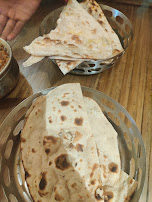

Where Earthen Roots Meet Soaring Bamboo Canopies
A sanctuary born at the crossroads of ancient Deccan culinary heritage and progressive biophilic architecture in the silk and craft capital of Channapatna.

The Apex Facade • Highway Sanctuary

Curved bamboo arches engineered for continuous cross-breeze.
Handcrafted Arches Engineered by Nature
Conceived as a living breathing testament to vernacular Indian architecture, The Kantara rejects cold steel and monolithic concrete. Every towering beam was harvested from sustainable groves, naturally smoke-treated, and bent by master craftsmen along the Kaveri river basin.
The high-pitched gable system draws ambient highway air upward, cooling the dining hall naturally even during midday sun, while warm amber lighting nested in hand-woven cane shades mimics the gentle glow of temple hearths at twilight.
“We did not build inside a room; we planted a forest of bamboo and let the aroma of slow-cooked handi claypots rise into the rafters.”
— The Master Craftsmen Guild
Artistry, Folklore & Native Identity
Channapatna is revered worldwide as the "Gombegala Ooru" (Toy Town of Karnataka). We honor this lineage with sacred motifs sculpted into every dining alcove.

The Golden Tree of Life
Hand-forged brass sculpture illuminated from behind, representing eternal abundance and root nourishment on rustic bamboo batten walls.

The Divine Greeting
A sculpted Kathakali relief paying homage to centuries of Dravidian performing lore, clasping hands in an auspicious gesture of welcome.

ದಿ ಕಾಂತಾರ (The Kantara)
Warm amber neon typography in native Kannada script embedded directly into the reed wall, celebrating Karnataka’s sacred forest identity.

Solid Timber Joinery
Custom tables carved from seasoned teak and bonded bamboo without plastic veneers, polished with natural beeswax for tactile warmth.
Earth, Smoke & Heirloom Hearth
Our kitchen honors ancestral South Indian cooking mechanics: clay pot heat distribution, stone grinding wheels, and open woodfire. We believe food tastes honest only when heat is allowed to linger and spices are given time to yield their secrets.

Claypot Slow Cooking
Clay is porous and alkaline, neutralizing excess acidity and infusing mutton and heirloom legumes with a distinct earthy minerality unachievable in stainless steel.

Smoked Embers & Ghee
Sourced coconut shell charcoal and babool wood provide high, searing dry heat that seals in moisture. Brushed with A2 village churned butter and Byadagi chili marinade.

Heirloom Flatbreads & Rice
We grind whole wheat and millets every morning. Served alongside small-batch Seeraga Samba short fragrant rice, cultivated organically on the banks of river Cauvery.
Our Purity Commitment
Zero artificial food colorings, no chemical tenderizers, and no reused frying oils. Every paste is hand-ground using traditional stone ammi kal and mortar pestles.
A Haven Along the Bangalore-Mysore Highway
The modern expressway connects Bangalore to the royal palace city of Mysore in under 90 minutes—yet speed often strips travel of its romance. The Kantara was established precisely as a sensory pause point: a moment where drivers step off the tarmac into a serene bamboo pavilion.
Whether arriving with extended family for Sunday afternoon thalis or meeting business companions midway between technological capitals and heritage palaces, our doors welcome every traveler with cooling spiced buttermilk and warmth.
Spacious Valet Parking
Convenient shaded bays for over 80 vehicles with EV charging.
Family Courtyard Dining
Sprawling open layouts designed for tranquil multi-generational feasts.
Spotless Rest Facilities
Thoughtfully maintained wash amenities designed for highway voyagers.
Fresh Filter Kaapi
Coorg pea-berry decoctions brewed over brass dabarah-tumblers.
55 km from Bangalore • 75 km from Mysore
“You drive past endless generic highway dhabas, and then suddenly this soaring bamboo cathedral appears. A truly transcendent meal.”
— Bangalore Epicurean JournalExperience The Sanctuary in Person
Whether you are undertaking a weekend drive to Mysore or planning an intimate family feast, reserve your table under our bamboo cathedral.